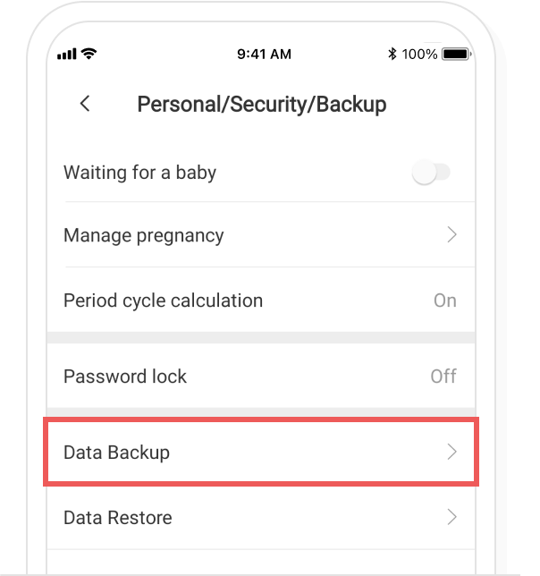
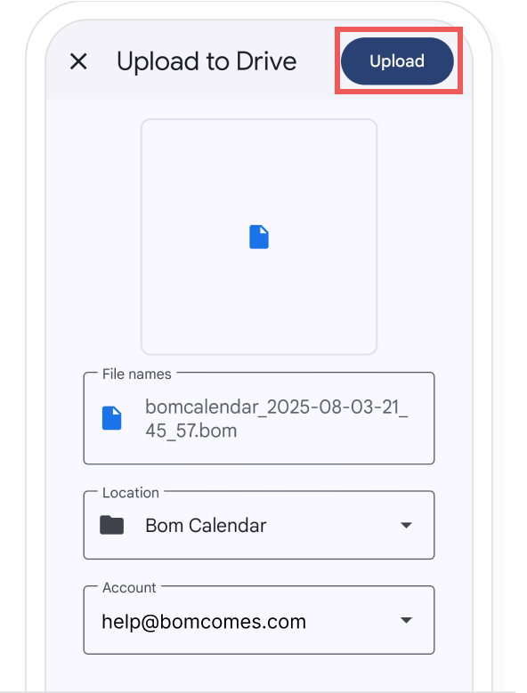

-
In the Bom Calendar Settings > ‘Personal/Security/Backup’, please select ‘Data Backup’.
Please choose the application or the email to send out the back up.
A. When backing up data to email
Please check whether back up data is attached to the email if you want to back up to email. Once you enter the email address to be backed up to the recipient, select 'Send'. The back up data file is saved to incoming mail as the email is sent.
B. When backing up data to the cloud
If you want to back up to Cloud, check whether the account and location to be saved are correct and select ‘Save(Upload)’. Once you select ‘Save(Upload)’, the backup data file is saved to Cloud.
